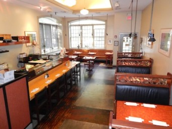

Restaurant Hours
Lunch 12:00pm - 2:30pm
Dinner 5:00pm - 9:00pm
Closed on Tuesdays


Wasabi: Authentic Japanese Cuisine in Ridgewood, NJ

For the best sushi and Japanese cuisine in Bergen County, come to Wasabi Japanese Restaurant. Located on E. Ridgewood Ave, just a few blocks outside of downtown Ridgewood, New Jersey, Wasabi is a perfect place to sit back, relax and enjoy a delicious meal. We offer full lunch and dinner menus six days a week.
For lunch, try any one of our tasty combination platters, noodle dishes, rice bowls, or Sushi Sashimi. For dinner, choose from an assortment of sushi rolls, hot and cold appetizers, teriyaki, tempura or Donburi entrees. You won't find a better selection of Authentic Japanese Cuisine in the Ridgewood area.